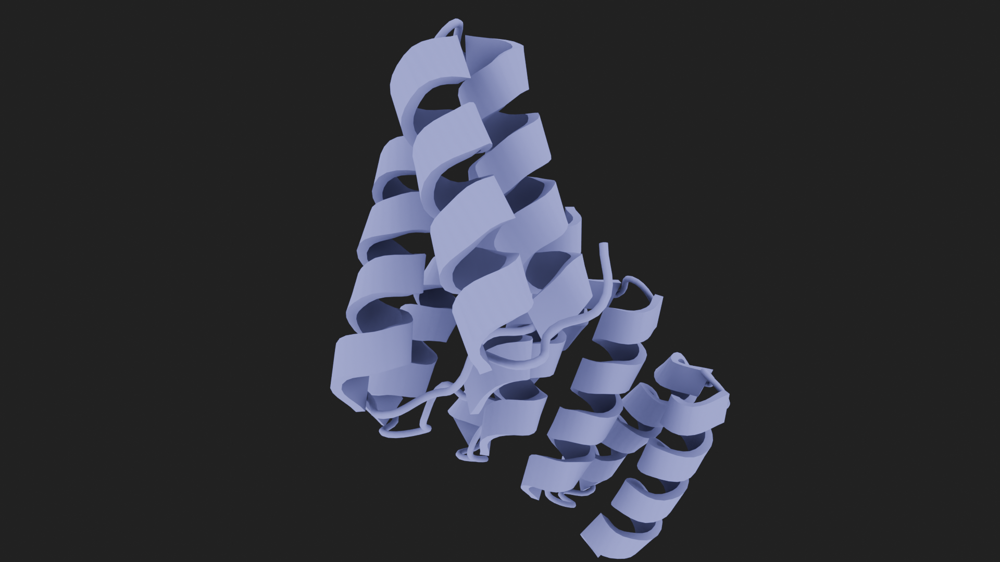
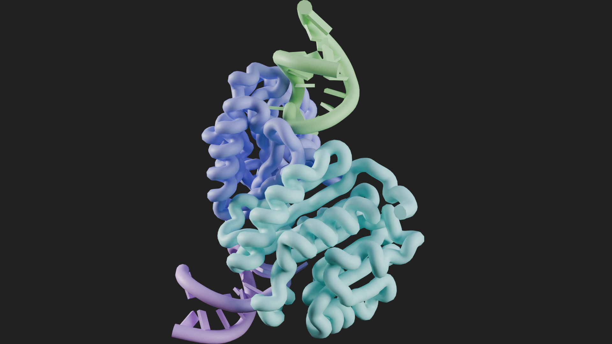
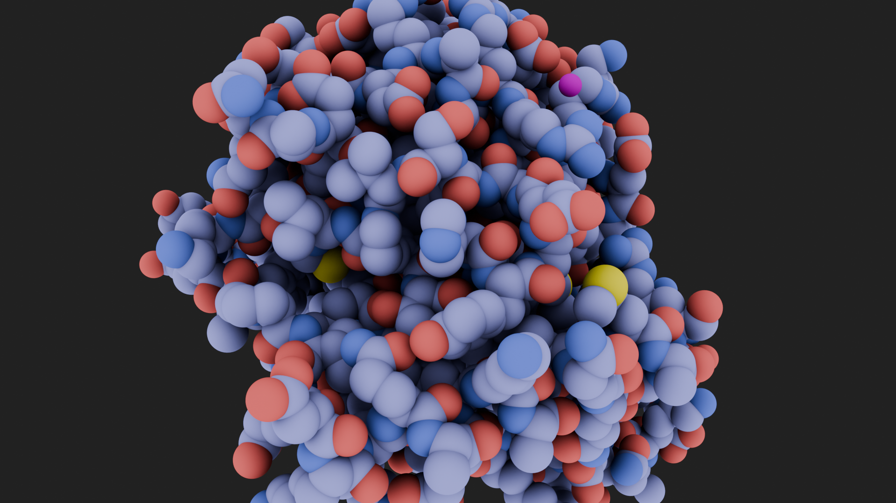

import molecularnodes as mn
import numpy as np
# we currently have to manually register a lot of the internals with Blender
mn.register()
mn.template.install()
# create a 'Molecule' object, by fetching a structure and parsing it into the scene
mol = mn.fetch("6N2Y", style = 'ribbon')Python API
Introduction to the APi and the quirks of programming in Blender
The API is Unstable
Molecular Nodes is designed and created first and foremost as an add-on for Blender, so the API can at times seem a bit quirky and for the time being is not to be considered stable.
Molecular Nodes is versioned to match Blender versions, so while we are currently up to “4.2.*“, the API should be not be consired to be that mature.
This is how we can use the API.
The Molecule Object
The Molecule object has the original data, as well as the Blender object associated with.
The different methods that are associated mostly interact with the Blender object, which is accessible via the mol.object, and the data is accessible via mol.array, which is the biotite.AtomArrayStack object.
print(f"{len(mol)=}")
print(f"{mol.object=}")
print(f"{mol.array[0][:10]=}")len(mol)=35043
mol.object=bpy.data.objects['6N2Y']
mol.array[0][:10]=array([
Atom(np.array([165.781, 162.453, 265.828], dtype=float32), chain_id="A", res_id=2, ins_code="", res_name="SER", hetero=False, atom_name="N", element="N", atom_id=1, b_factor=99.36, occupancy=1.0, sec_struct=3, entity_id=0),
Atom(np.array([165.694, 163.886, 266.083], dtype=float32), chain_id="A", res_id=2, ins_code="", res_name="SER", hetero=False, atom_name="CA", element="C", atom_id=2, b_factor=99.36, occupancy=1.0, sec_struct=3, entity_id=0),
Atom(np.array([166.549, 164.278, 267.281], dtype=float32), chain_id="A", res_id=2, ins_code="", res_name="SER", hetero=False, atom_name="C", element="C", atom_id=3, b_factor=99.36, occupancy=1.0, sec_struct=3, entity_id=0),
Atom(np.array([166.099, 165.005, 268.165], dtype=float32), chain_id="A", res_id=2, ins_code="", res_name="SER", hetero=False, atom_name="O", element="O", atom_id=4, b_factor=99.36, occupancy=1.0, sec_struct=3, entity_id=0),
Atom(np.array([164.24 , 164.303, 266.314], dtype=float32), chain_id="A", res_id=2, ins_code="", res_name="SER", hetero=False, atom_name="CB", element="C", atom_id=5, b_factor=99.36, occupancy=1.0, sec_struct=3, entity_id=0),
Atom(np.array([164.147, 165.689, 266.594], dtype=float32), chain_id="A", res_id=2, ins_code="", res_name="SER", hetero=False, atom_name="OG", element="O", atom_id=6, b_factor=99.36, occupancy=1.0, sec_struct=3, entity_id=0),
Atom(np.array([167.783, 163.792, 267.302], dtype=float32), chain_id="A", res_id=3, ins_code="", res_name="ILE", hetero=False, atom_name="N", element="N", atom_id=7, b_factor=93.91, occupancy=1.0, sec_struct=3, entity_id=0),
Atom(np.array([168.702, 164.083, 268.395], dtype=float32), chain_id="A", res_id=3, ins_code="", res_name="ILE", hetero=False, atom_name="CA", element="C", atom_id=8, b_factor=93.91, occupancy=1.0, sec_struct=3, entity_id=0),
Atom(np.array([169.366, 165.434, 268.145], dtype=float32), chain_id="A", res_id=3, ins_code="", res_name="ILE", hetero=False, atom_name="C", element="C", atom_id=9, b_factor=93.91, occupancy=1.0, sec_struct=3, entity_id=0),
Atom(np.array([169.633, 165.817, 266.999], dtype=float32), chain_id="A", res_id=3, ins_code="", res_name="ILE", hetero=False, atom_name="O", element="O", atom_id=10, b_factor=93.91, occupancy=1.0, sec_struct=3, entity_id=0)
])mol.named_attribute('chain_id')array([0, 0, 0, ..., 5, 5, 5])mol.positionarray([[1.65780997, 1.62452996, 2.6582799 ],
[1.65693998, 1.63885999, 2.66083002],
[1.66548991, 1.64277995, 2.67281008],
...,
[1.37845004, 1.57386994, 2.16669989],
[1.38423002, 1.5675199 , 2.17714 ],
[1.39749992, 1.55744004, 2.29000998]])Updating the Atom Positions
mol.position -= mol.centroid()
mol.positionarray([[-0.0113072 , -0.03149763, 0.58922708],
[-0.01217719, -0.0171676 , 0.59177721],
[-0.00362726, -0.01324764, 0.60375726],
...,
[-0.29066715, -0.08215764, 0.09764704],
[-0.28488716, -0.08850768, 0.10808715],
[-0.27161726, -0.09858754, 0.22095713]])canvas = mn.scene.Canvas()
canvas.resolution = (720, 480)
codes = ["4ozs", "8H1B", "8U8W"]
styles = ['cartoon', 'ribbon', 'spheres']
materials = ['MN Ambient Occlusion', 'MN Default', 'MN Ambient Occlusion']
for code, style, material in zip(codes, styles, materials):
canvas.scene_reset()
canvas.render_engine = "CYCLES"
canvas.samples_cycles = 32
# canvas.cycles_device = "GPU"
canvas.cycles_device = "CPU" # can't do GPU rendering on GitHub actions
mol = mn.fetch(code)
mol.material = bpy.data.materials[material]
mol.style = 'ribbon'
canvas.frame_object(mol)
mol.style = style
canvas.snapshot()Fra:1 Mem:47.49M (Peak 49.22M) | Time:00:00.03 | Mem:0.00M, Peak:0.00M | Scene, ViewLayer | Synchronizing object | 4ozs
Fra:1 Mem:48.46M (Peak 49.63M) | Time:00:00.03 | Mem:0.00M, Peak:0.00M | Scene, ViewLayer | Initializing
Fra:1 Mem:47.17M (Peak 49.63M) | Time:00:00.03 | Mem:0.00M, Peak:0.00M | Scene, ViewLayer | Updating Images | Loading forest_cave_1k.hdr
Fra:1 Mem:44.40M (Peak 71.18M) | Time:00:00.07 | Mem:8.00M, Peak:8.00M | Scene, ViewLayer | Waiting for render to start
Fra:1 Mem:44.40M (Peak 71.18M) | Time:00:00.07 | Mem:8.00M, Peak:8.00M | Scene, ViewLayer | Loading render kernels (may take a few minutes the first time)
Fra:1 Mem:44.40M (Peak 71.18M) | Time:00:00.07 | Mem:8.00M, Peak:8.00M | Scene, ViewLayer | Updating Scene
Fra:1 Mem:44.40M (Peak 71.18M) | Time:00:00.07 | Mem:8.00M, Peak:8.00M | Scene, ViewLayer | Updating Shaders
Fra:1 Mem:44.49M (Peak 71.18M) | Time:00:00.07 | Mem:8.00M, Peak:8.00M | Scene, ViewLayer | Updating Procedurals
Fra:1 Mem:44.49M (Peak 71.18M) | Time:00:00.07 | Mem:8.00M, Peak:8.00M | Scene, ViewLayer | Updating Background
Fra:1 Mem:44.49M (Peak 71.18M) | Time:00:00.07 | Mem:8.00M, Peak:8.00M | Scene, ViewLayer | Updating Camera
Fra:1 Mem:44.49M (Peak 71.18M) | Time:00:00.07 | Mem:8.00M, Peak:8.00M | Scene, ViewLayer | Updating Meshes Flags
Fra:1 Mem:44.49M (Peak 71.18M) | Time:00:00.07 | Mem:8.00M, Peak:8.00M | Scene, ViewLayer | Updating Objects
Fra:1 Mem:44.49M (Peak 71.18M) | Time:00:00.07 | Mem:8.00M, Peak:8.00M | Scene, ViewLayer | Updating Objects | Copying Transformations to device
Fra:1 Mem:44.49M (Peak 71.18M) | Time:00:00.07 | Mem:8.00M, Peak:8.00M | Scene, ViewLayer | Updating Objects | Applying Static Transformations
Fra:1 Mem:44.49M (Peak 71.18M) | Time:00:00.07 | Mem:8.00M, Peak:8.00M | Scene, ViewLayer | Updating Particle Systems
Fra:1 Mem:44.49M (Peak 71.18M) | Time:00:00.07 | Mem:8.00M, Peak:8.00M | Scene, ViewLayer | Updating Particle Systems | Copying Particles to device
Fra:1 Mem:44.49M (Peak 71.18M) | Time:00:00.07 | Mem:8.00M, Peak:8.00M | Scene, ViewLayer | Updating Meshes
Fra:1 Mem:44.69M (Peak 71.18M) | Time:00:00.07 | Mem:8.00M, Peak:8.00M | Scene, ViewLayer | Updating Mesh | Computing attributes
Fra:1 Mem:44.85M (Peak 71.18M) | Time:00:00.07 | Mem:8.00M, Peak:8.00M | Scene, ViewLayer | Updating Mesh | Copying Attributes to device
Fra:1 Mem:44.85M (Peak 71.18M) | Time:00:00.07 | Mem:8.16M, Peak:8.16M | Scene, ViewLayer | Updating Scene BVH | Building
Fra:1 Mem:44.85M (Peak 71.18M) | Time:00:00.07 | Mem:8.16M, Peak:8.16M | Scene, ViewLayer | Updating Scene BVH | Building BVH
Fra:1 Mem:44.85M (Peak 71.18M) | Time:00:00.07 | Mem:8.57M, Peak:8.57M | Scene, ViewLayer | Updating Scene BVH | Building BVH 0%
Fra:1 Mem:44.85M (Peak 71.18M) | Time:00:00.08 | Mem:9.01M, Peak:9.41M | Scene, ViewLayer | Updating Scene BVH | Copying BVH to device
Fra:1 Mem:44.85M (Peak 71.18M) | Time:00:00.08 | Mem:9.01M, Peak:9.41M | Scene, ViewLayer | Updating Mesh | Computing normals
Fra:1 Mem:45.42M (Peak 71.18M) | Time:00:00.08 | Mem:9.01M, Peak:9.41M | Scene, ViewLayer | Updating Mesh | Copying Mesh to device
Fra:1 Mem:45.42M (Peak 71.18M) | Time:00:00.08 | Mem:9.58M, Peak:9.58M | Scene, ViewLayer | Updating Objects Flags
Fra:1 Mem:45.42M (Peak 71.18M) | Time:00:00.08 | Mem:9.58M, Peak:9.58M | Scene, ViewLayer | Updating Primitive Offsets
Fra:1 Mem:45.42M (Peak 71.18M) | Time:00:00.08 | Mem:9.58M, Peak:9.58M | Scene, ViewLayer | Updating Images
Fra:1 Mem:45.42M (Peak 71.18M) | Time:00:00.08 | Mem:9.58M, Peak:9.58M | Scene, ViewLayer | Updating Camera Volume
Fra:1 Mem:45.42M (Peak 71.18M) | Time:00:00.08 | Mem:9.58M, Peak:9.58M | Scene, ViewLayer | Updating Lookup Tables
Fra:1 Mem:45.42M (Peak 71.18M) | Time:00:00.08 | Mem:9.66M, Peak:9.66M | Scene, ViewLayer | Updating Lights
Fra:1 Mem:45.42M (Peak 71.18M) | Time:00:00.08 | Mem:9.66M, Peak:9.66M | Scene, ViewLayer | Updating Lights | Importance map
Fra:1 Mem:109.45M (Peak 397.42M) | Time:00:00.88 | Mem:73.70M, Peak:233.67M | Scene, ViewLayer | Updating Lights | Computing tree
Fra:1 Mem:111.93M (Peak 397.42M) | Time:00:00.93 | Mem:76.19M, Peak:233.67M | Scene, ViewLayer | Updating Integrator
Fra:1 Mem:112.93M (Peak 397.42M) | Time:00:00.93 | Mem:77.19M, Peak:233.67M | Scene, ViewLayer | Updating Film
Fra:1 Mem:112.93M (Peak 397.42M) | Time:00:00.93 | Mem:77.11M, Peak:233.67M | Scene, ViewLayer | Updating Lookup Tables
Fra:1 Mem:112.93M (Peak 397.42M) | Time:00:00.93 | Mem:77.19M, Peak:233.67M | Scene, ViewLayer | Updating Baking
Fra:1 Mem:112.93M (Peak 397.42M) | Time:00:00.93 | Mem:77.19M, Peak:233.67M | Scene, ViewLayer | Updating Device | Writing constant memory
Fra:1 Mem:112.94M (Peak 397.42M) | Time:00:00.93 | Mem:77.19M, Peak:233.67M | Scene, ViewLayer | Loading denoising kernels (may take a few minutes the first time)
Fra:1 Mem:112.94M (Peak 397.42M) | Time:00:00.93 | Mem:77.19M, Peak:233.67M | Scene, ViewLayer | Sample 0/32
Fra:1 Mem:263.24M (Peak 397.42M) | Time:00:01.74 | Remaining:00:24.96 | Mem:227.48M, Peak:233.67M | Scene, ViewLayer | Sample 1/32
Fra:1 Mem:326.53M (Peak 421.45M) | Time:01:10.87 | Mem:227.48M, Peak:233.67M | Scene, ViewLayer | Sample 32/32
Fra:1 Mem:326.53M (Peak 421.45M) | Time:01:10.87 | Mem:227.48M, Peak:233.67M | Scene, ViewLayer | Finished
Saved: '/var/folders/2s/h6hvv9ps03xgz_krkkstvq_r0000gn/T/tmpjkhjr53_/snapshot.png'
Time: 01:11.24 (Saving: 00:00.32)

Fra:1 Mem:40.10M (Peak 42.80M) | Time:00:00.01 | Mem:0.00M, Peak:0.00M | Scene, ViewLayer | Synchronizing object | 8H1B
Fra:1 Mem:43.19M (Peak 48.09M) | Time:00:00.01 | Mem:0.00M, Peak:0.00M | Scene, ViewLayer | Initializing
Fra:1 Mem:38.78M (Peak 48.09M) | Time:00:00.01 | Mem:0.00M, Peak:0.00M | Scene, ViewLayer | Updating Images | Loading forest_cave_1k.hdr
Fra:1 Mem:40.48M (Peak 62.79M) | Time:00:00.04 | Mem:8.00M, Peak:8.00M | Scene, ViewLayer | Waiting for render to start
Fra:1 Mem:40.48M (Peak 62.79M) | Time:00:00.04 | Mem:8.00M, Peak:8.00M | Scene, ViewLayer | Loading render kernels (may take a few minutes the first time)
Fra:1 Mem:40.48M (Peak 62.79M) | Time:00:00.04 | Mem:8.00M, Peak:8.00M | Scene, ViewLayer | Updating Scene
Fra:1 Mem:40.48M (Peak 62.79M) | Time:00:00.04 | Mem:8.00M, Peak:8.00M | Scene, ViewLayer | Updating Shaders
Fra:1 Mem:40.57M (Peak 62.79M) | Time:00:00.04 | Mem:8.00M, Peak:8.00M | Scene, ViewLayer | Updating Procedurals
Fra:1 Mem:40.57M (Peak 62.79M) | Time:00:00.04 | Mem:8.00M, Peak:8.00M | Scene, ViewLayer | Updating Background
Fra:1 Mem:40.57M (Peak 62.79M) | Time:00:00.04 | Mem:8.00M, Peak:8.00M | Scene, ViewLayer | Updating Camera
Fra:1 Mem:40.57M (Peak 62.79M) | Time:00:00.04 | Mem:8.00M, Peak:8.00M | Scene, ViewLayer | Updating Meshes Flags
Fra:1 Mem:40.57M (Peak 62.79M) | Time:00:00.04 | Mem:8.00M, Peak:8.00M | Scene, ViewLayer | Updating Objects
Fra:1 Mem:40.57M (Peak 62.79M) | Time:00:00.04 | Mem:8.00M, Peak:8.00M | Scene, ViewLayer | Updating Objects | Copying Transformations to device
Fra:1 Mem:40.57M (Peak 62.79M) | Time:00:00.04 | Mem:8.01M, Peak:8.01M | Scene, ViewLayer | Updating Objects | Applying Static Transformations
Fra:1 Mem:40.57M (Peak 62.79M) | Time:00:00.04 | Mem:8.01M, Peak:8.01M | Scene, ViewLayer | Updating Particle Systems
Fra:1 Mem:40.57M (Peak 62.79M) | Time:00:00.04 | Mem:8.01M, Peak:8.01M | Scene, ViewLayer | Updating Particle Systems | Copying Particles to device
Fra:1 Mem:40.57M (Peak 62.79M) | Time:00:00.04 | Mem:8.01M, Peak:8.01M | Scene, ViewLayer | Updating Meshes
Fra:1 Mem:41.27M (Peak 62.79M) | Time:00:00.04 | Mem:8.01M, Peak:8.01M | Scene, ViewLayer | Updating Mesh | Computing attributes
Fra:1 Mem:41.89M (Peak 62.79M) | Time:00:00.04 | Mem:8.01M, Peak:8.01M | Scene, ViewLayer | Updating Mesh | Copying Attributes to device
Fra:1 Mem:41.89M (Peak 62.79M) | Time:00:00.04 | Mem:8.63M, Peak:8.63M | Scene, ViewLayer | Updating Geometry BVH Mesh 1/1 | Building BVH
Fra:1 Mem:41.89M (Peak 62.79M) | Time:00:00.04 | Mem:8.63M, Peak:8.63M | Scene, ViewLayer | Updating Geometry BVH Mesh 1/1 | Building BVH 0%
Fra:1 Mem:41.89M (Peak 62.79M) | Time:00:00.04 | Mem:8.63M, Peak:8.63M | Scene, ViewLayer | Updating Scene BVH | Building
Fra:1 Mem:41.89M (Peak 62.79M) | Time:00:00.04 | Mem:8.63M, Peak:8.63M | Scene, ViewLayer | Updating Scene BVH | Building BVH
Fra:1 Mem:41.89M (Peak 62.79M) | Time:00:00.05 | Mem:11.70M, Peak:13.09M | Scene, ViewLayer | Updating Scene BVH | Copying BVH to device
Fra:1 Mem:41.89M (Peak 62.79M) | Time:00:00.05 | Mem:11.70M, Peak:13.09M | Scene, ViewLayer | Updating Mesh | Computing normals
Fra:1 Mem:43.46M (Peak 62.79M) | Time:00:00.05 | Mem:11.70M, Peak:13.09M | Scene, ViewLayer | Updating Mesh | Copying Mesh to device
Fra:1 Mem:43.46M (Peak 62.79M) | Time:00:00.05 | Mem:13.27M, Peak:13.27M | Scene, ViewLayer | Updating Objects Flags
Fra:1 Mem:43.46M (Peak 62.79M) | Time:00:00.05 | Mem:13.27M, Peak:13.27M | Scene, ViewLayer | Updating Primitive Offsets
Fra:1 Mem:43.46M (Peak 62.79M) | Time:00:00.05 | Mem:13.27M, Peak:13.27M | Scene, ViewLayer | Updating Images
Fra:1 Mem:43.46M (Peak 62.79M) | Time:00:00.05 | Mem:13.27M, Peak:13.27M | Scene, ViewLayer | Updating Camera Volume
Fra:1 Mem:43.46M (Peak 62.79M) | Time:00:00.05 | Mem:13.27M, Peak:13.27M | Scene, ViewLayer | Updating Lookup Tables
Fra:1 Mem:43.46M (Peak 62.79M) | Time:00:00.05 | Mem:13.35M, Peak:13.35M | Scene, ViewLayer | Updating Lights
Fra:1 Mem:43.46M (Peak 62.79M) | Time:00:00.05 | Mem:13.35M, Peak:13.35M | Scene, ViewLayer | Updating Lights | Importance map
Fra:1 Mem:107.49M (Peak 395.46M) | Time:00:00.69 | Mem:77.40M, Peak:237.37M | Scene, ViewLayer | Updating Lights | Computing tree
Fra:1 Mem:107.49M (Peak 395.46M) | Time:00:00.69 | Mem:77.40M, Peak:237.37M | Scene, ViewLayer | Updating Integrator
Fra:1 Mem:108.49M (Peak 395.46M) | Time:00:00.69 | Mem:78.40M, Peak:237.37M | Scene, ViewLayer | Updating Film
Fra:1 Mem:108.50M (Peak 395.46M) | Time:00:00.69 | Mem:78.32M, Peak:237.37M | Scene, ViewLayer | Updating Lookup Tables
Fra:1 Mem:108.50M (Peak 395.46M) | Time:00:00.69 | Mem:78.40M, Peak:237.37M | Scene, ViewLayer | Updating Baking
Fra:1 Mem:108.50M (Peak 395.46M) | Time:00:00.69 | Mem:78.40M, Peak:237.37M | Scene, ViewLayer | Updating Device | Writing constant memory
Fra:1 Mem:108.50M (Peak 395.46M) | Time:00:00.69 | Mem:78.40M, Peak:237.37M | Scene, ViewLayer | Loading denoising kernels (may take a few minutes the first time)
Fra:1 Mem:108.50M (Peak 395.46M) | Time:00:00.69 | Mem:78.40M, Peak:237.37M | Scene, ViewLayer | Sample 0/32
Fra:1 Mem:258.81M (Peak 395.46M) | Time:00:01.38 | Remaining:00:21.34 | Mem:228.69M, Peak:237.37M | Scene, ViewLayer | Sample 1/32
Fra:1 Mem:322.09M (Peak 417.02M) | Time:00:51.04 | Mem:228.69M, Peak:237.37M | Scene, ViewLayer | Sample 32/32
Fra:1 Mem:322.09M (Peak 417.02M) | Time:00:51.04 | Mem:228.69M, Peak:237.37M | Scene, ViewLayer | Finished
Saved: '/var/folders/2s/h6hvv9ps03xgz_krkkstvq_r0000gn/T/tmpn6so1qs4/snapshot.png'
Time: 00:51.26 (Saving: 00:00.20)

Fra:1 Mem:22.63M (Peak 26.12M) | Time:00:00.00 | Mem:0.00M, Peak:0.00M | Scene, ViewLayer | Synchronizing object | 8U8W
Fra:1 Mem:22.98M (Peak 26.12M) | Time:00:00.01 | Mem:0.00M, Peak:0.00M | Scene, ViewLayer | Initializing
Fra:1 Mem:22.91M (Peak 26.12M) | Time:00:00.01 | Mem:0.00M, Peak:0.00M | Scene, ViewLayer | Updating Images | Loading forest_cave_1k.hdr
Fra:1 Mem:29.82M (Peak 46.92M) | Time:00:00.02 | Mem:8.00M, Peak:8.00M | Scene, ViewLayer | Waiting for render to start
Fra:1 Mem:29.83M (Peak 46.92M) | Time:00:00.03 | Mem:8.00M, Peak:8.00M | Scene, ViewLayer | Loading render kernels (may take a few minutes the first time)
Fra:1 Mem:29.83M (Peak 46.92M) | Time:00:00.03 | Mem:8.00M, Peak:8.00M | Scene, ViewLayer | Updating Scene
Fra:1 Mem:29.83M (Peak 46.92M) | Time:00:00.03 | Mem:8.00M, Peak:8.00M | Scene, ViewLayer | Updating Shaders
Fra:1 Mem:29.91M (Peak 46.92M) | Time:00:00.03 | Mem:8.00M, Peak:8.00M | Scene, ViewLayer | Updating Procedurals
Fra:1 Mem:29.91M (Peak 46.92M) | Time:00:00.03 | Mem:8.00M, Peak:8.00M | Scene, ViewLayer | Updating Background
Fra:1 Mem:29.91M (Peak 46.92M) | Time:00:00.03 | Mem:8.00M, Peak:8.00M | Scene, ViewLayer | Updating Camera
Fra:1 Mem:29.91M (Peak 46.92M) | Time:00:00.03 | Mem:8.00M, Peak:8.00M | Scene, ViewLayer | Updating Meshes Flags
Fra:1 Mem:29.91M (Peak 46.92M) | Time:00:00.03 | Mem:8.00M, Peak:8.00M | Scene, ViewLayer | Updating Objects
Fra:1 Mem:29.91M (Peak 46.92M) | Time:00:00.03 | Mem:8.00M, Peak:8.00M | Scene, ViewLayer | Updating Objects | Copying Transformations to device
Fra:1 Mem:29.91M (Peak 46.92M) | Time:00:00.03 | Mem:8.00M, Peak:8.00M | Scene, ViewLayer | Updating Objects | Applying Static Transformations
Fra:1 Mem:29.91M (Peak 46.92M) | Time:00:00.03 | Mem:8.00M, Peak:8.00M | Scene, ViewLayer | Updating Particle Systems
Fra:1 Mem:29.91M (Peak 46.92M) | Time:00:00.03 | Mem:8.00M, Peak:8.00M | Scene, ViewLayer | Updating Particle Systems | Copying Particles to device
Fra:1 Mem:29.91M (Peak 46.92M) | Time:00:00.03 | Mem:8.00M, Peak:8.00M | Scene, ViewLayer | Updating Meshes
Fra:1 Mem:29.91M (Peak 46.92M) | Time:00:00.03 | Mem:8.00M, Peak:8.00M | Scene, ViewLayer | Updating Mesh | Computing attributes
Fra:1 Mem:29.94M (Peak 46.92M) | Time:00:00.03 | Mem:8.00M, Peak:8.00M | Scene, ViewLayer | Updating Mesh | Copying Attributes to device
Fra:1 Mem:29.94M (Peak 46.92M) | Time:00:00.03 | Mem:8.04M, Peak:8.04M | Scene, ViewLayer | Updating Scene BVH | Building
Fra:1 Mem:29.94M (Peak 46.92M) | Time:00:00.03 | Mem:8.04M, Peak:8.04M | Scene, ViewLayer | Updating Scene BVH | Building BVH
Fra:1 Mem:29.94M (Peak 46.92M) | Time:00:00.03 | Mem:8.14M, Peak:8.14M | Scene, ViewLayer | Updating Scene BVH | Building BVH 0%
Fra:1 Mem:29.94M (Peak 46.92M) | Time:00:00.03 | Mem:8.12M, Peak:8.19M | Scene, ViewLayer | Updating Scene BVH | Copying BVH to device
Fra:1 Mem:29.94M (Peak 46.92M) | Time:00:00.03 | Mem:8.12M, Peak:8.19M | Scene, ViewLayer | Updating Mesh | Copying Point clouds to device
Fra:1 Mem:29.99M (Peak 46.92M) | Time:00:00.03 | Mem:8.16M, Peak:8.19M | Scene, ViewLayer | Updating Objects Flags
Fra:1 Mem:29.99M (Peak 46.92M) | Time:00:00.03 | Mem:8.16M, Peak:8.19M | Scene, ViewLayer | Updating Primitive Offsets
Fra:1 Mem:29.99M (Peak 46.92M) | Time:00:00.03 | Mem:8.16M, Peak:8.19M | Scene, ViewLayer | Updating Images
Fra:1 Mem:29.99M (Peak 46.92M) | Time:00:00.03 | Mem:8.16M, Peak:8.19M | Scene, ViewLayer | Updating Camera Volume
Fra:1 Mem:29.99M (Peak 46.92M) | Time:00:00.03 | Mem:8.16M, Peak:8.19M | Scene, ViewLayer | Updating Lookup Tables
Fra:1 Mem:29.99M (Peak 46.92M) | Time:00:00.03 | Mem:8.25M, Peak:8.25M | Scene, ViewLayer | Updating Lights
Fra:1 Mem:29.99M (Peak 46.92M) | Time:00:00.03 | Mem:8.25M, Peak:8.25M | Scene, ViewLayer | Updating Lights | Importance map
Fra:1 Mem:94.02M (Peak 381.99M) | Time:00:00.54 | Mem:72.29M, Peak:232.26M | Scene, ViewLayer | Updating Lights | Computing tree
Fra:1 Mem:94.02M (Peak 381.99M) | Time:00:00.54 | Mem:72.29M, Peak:232.26M | Scene, ViewLayer | Updating Integrator
Fra:1 Mem:95.02M (Peak 381.99M) | Time:00:00.54 | Mem:73.29M, Peak:232.26M | Scene, ViewLayer | Updating Film
Fra:1 Mem:95.02M (Peak 381.99M) | Time:00:00.54 | Mem:73.21M, Peak:232.26M | Scene, ViewLayer | Updating Lookup Tables
Fra:1 Mem:95.02M (Peak 381.99M) | Time:00:00.54 | Mem:73.29M, Peak:232.26M | Scene, ViewLayer | Updating Baking
Fra:1 Mem:95.02M (Peak 381.99M) | Time:00:00.54 | Mem:73.29M, Peak:232.26M | Scene, ViewLayer | Updating Device | Writing constant memory
Fra:1 Mem:95.02M (Peak 381.99M) | Time:00:00.54 | Mem:73.29M, Peak:232.26M | Scene, ViewLayer | Loading denoising kernels (may take a few minutes the first time)
Fra:1 Mem:95.02M (Peak 381.99M) | Time:00:00.54 | Mem:73.29M, Peak:232.26M | Scene, ViewLayer | Sample 0/32
Fra:1 Mem:245.33M (Peak 381.99M) | Time:00:02.10 | Remaining:00:48.26 | Mem:223.59M, Peak:232.26M | Scene, ViewLayer | Sample 1/32
Fra:1 Mem:245.33M (Peak 381.99M) | Time:00:24.98 | Remaining:00:21.56 | Mem:223.59M, Peak:232.26M | Scene, ViewLayer | Sample 17/32
Fra:1 Mem:308.62M (Peak 403.54M) | Time:01:14.88 | Mem:223.59M, Peak:232.26M | Scene, ViewLayer | Sample 32/32
Fra:1 Mem:308.62M (Peak 403.54M) | Time:01:14.88 | Mem:223.59M, Peak:232.26M | Scene, ViewLayer | Finished
Saved: '/var/folders/2s/h6hvv9ps03xgz_krkkstvq_r0000gn/T/tmped4ib9sc/snapshot.png'
Time: 01:15.06 (Saving: 00:00.16)
